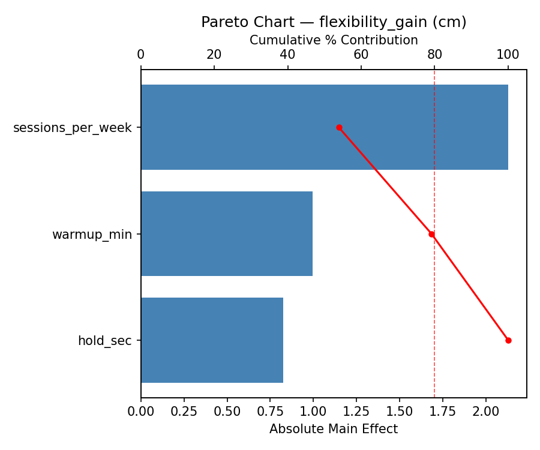
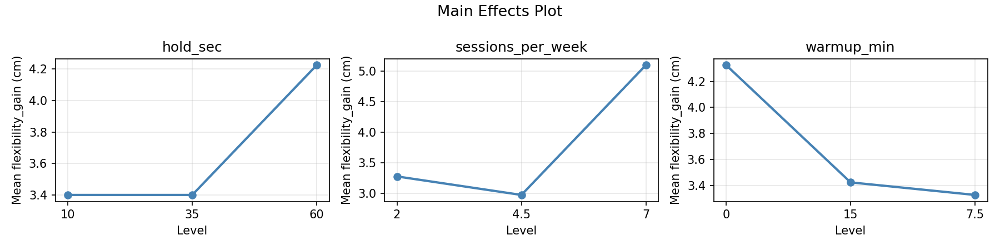
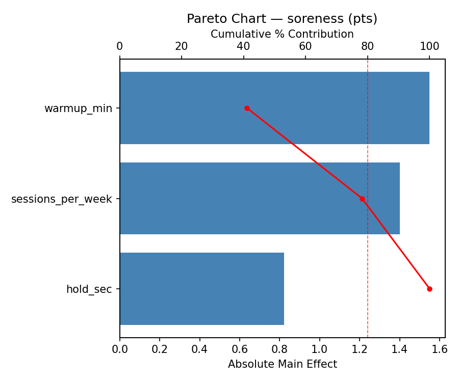
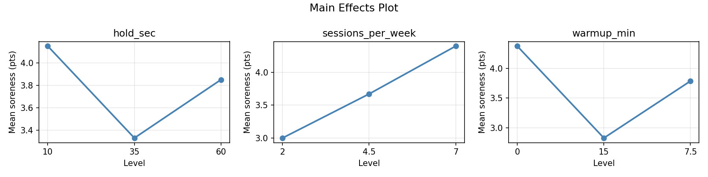
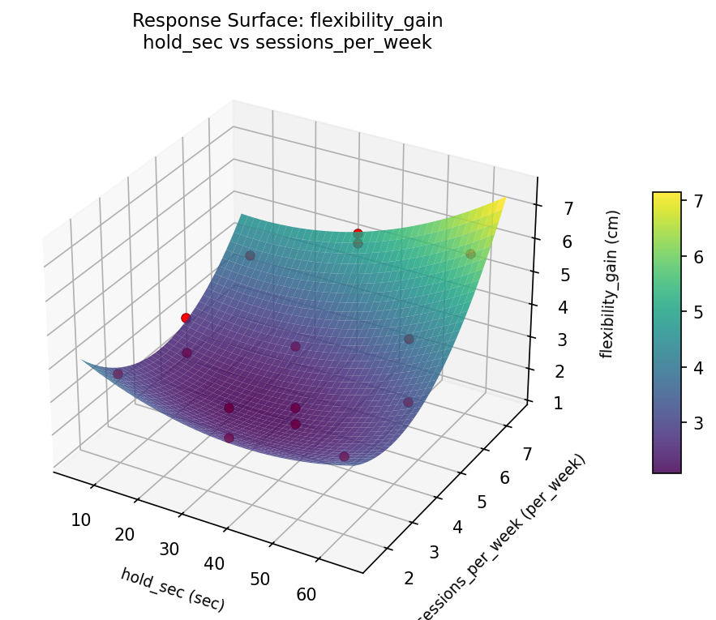
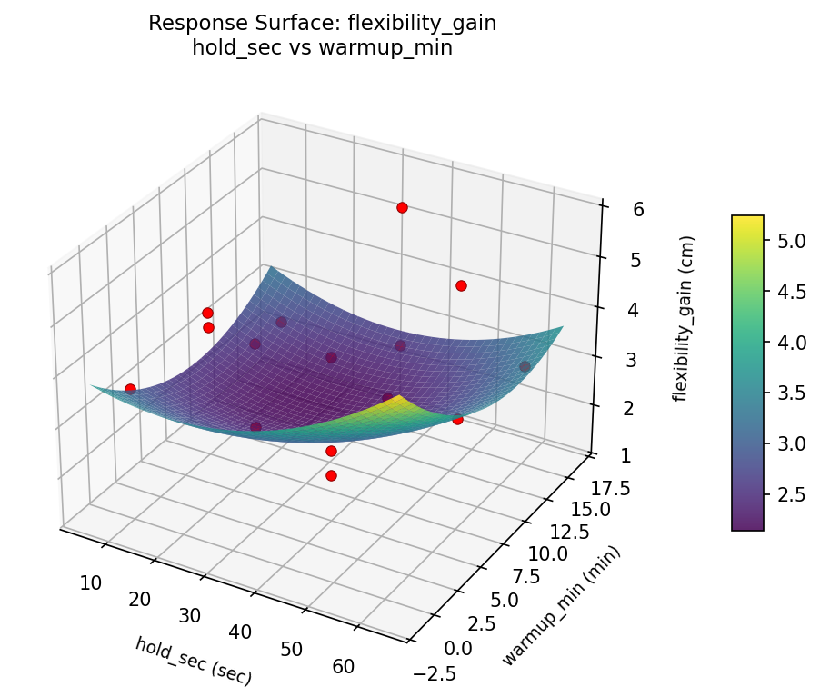
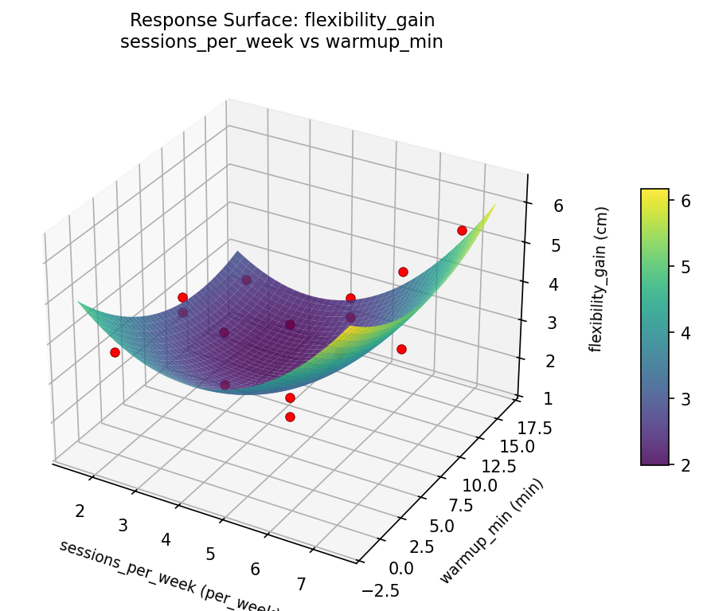
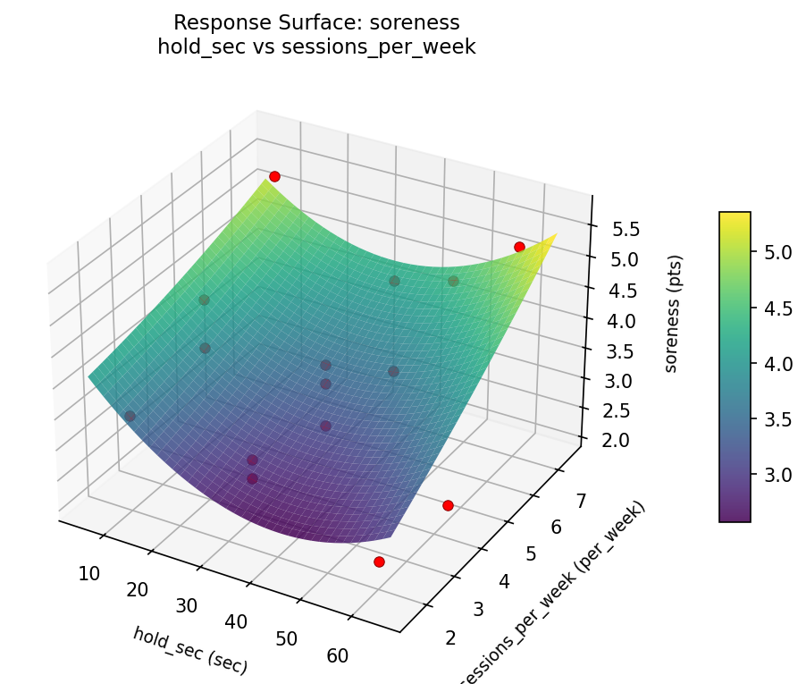
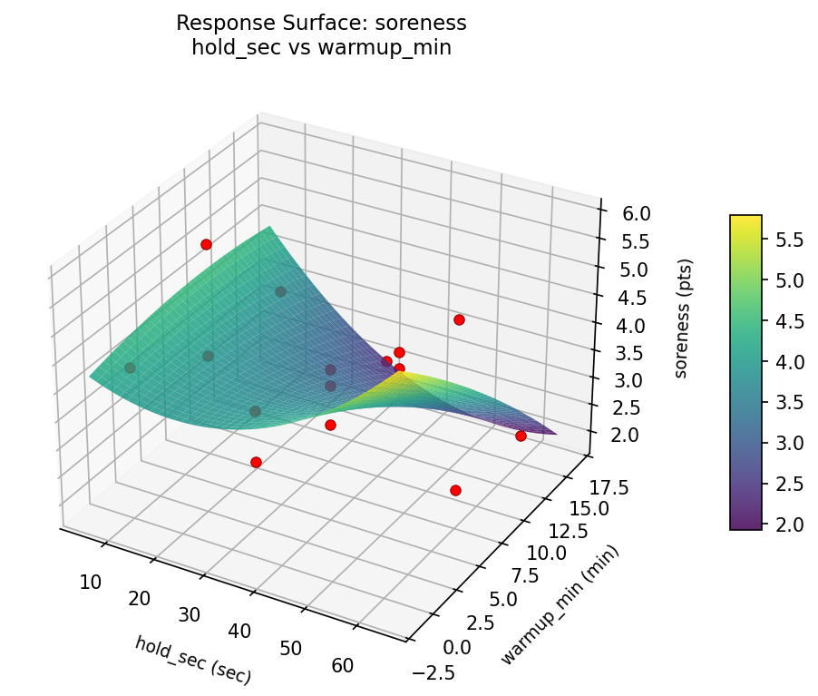
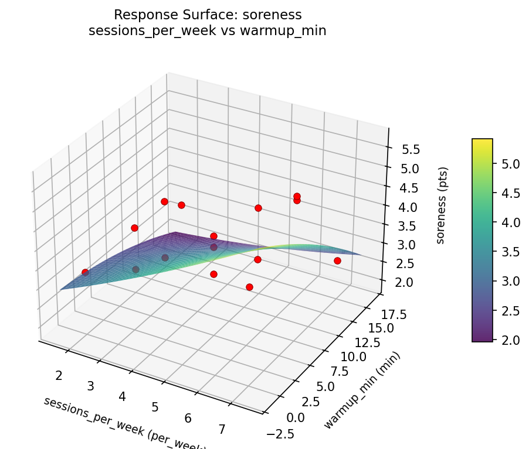

Experimental Setup
Factors
| Factor | Low | High | Unit |
|---|
hold_sec | 10 | 60 | sec |
sessions_per_week | 2 | 7 | per_week |
warmup_min | 0 | 15 | min |
Fixed: stretch_type = static, target_area = hamstrings
Responses
| Response | Direction | Unit |
|---|
flexibility_gain | ↑ maximize | cm |
soreness | ↓ minimize | pts |
Configuration
{
"metadata": {
"name": "Stretching Protocol Design",
"description": "Box-Behnken design to maximize flexibility gain and minimize soreness by tuning hold duration, session frequency, and warmup intensity"
},
"factors": [
{
"name": "hold_sec",
"levels": [
"10",
"60"
],
"type": "continuous",
"unit": "sec"
},
{
"name": "sessions_per_week",
"levels": [
"2",
"7"
],
"type": "continuous",
"unit": "per_week"
},
{
"name": "warmup_min",
"levels": [
"0",
"15"
],
"type": "continuous",
"unit": "min"
}
],
"fixed_factors": {
"stretch_type": "static",
"target_area": "hamstrings"
},
"responses": [
{
"name": "flexibility_gain",
"optimize": "maximize",
"unit": "cm"
},
{
"name": "soreness",
"optimize": "minimize",
"unit": "pts"
}
],
"settings": {
"operation": "box_behnken",
"test_script": "use_cases/115_stretching_protocol/sim.sh"
}
}
Experimental Matrix
The Box-Behnken Design produces 15 runs. Each row is one experiment with specific factor settings.
| Run | hold_sec | sessions_per_week | warmup_min |
|---|
| 1 | 35 | 2 | 0 |
| 2 | 35 | 4.5 | 7.5 |
| 3 | 60 | 4.5 | 15 |
| 4 | 60 | 4.5 | 0 |
| 5 | 35 | 4.5 | 7.5 |
| 6 | 35 | 4.5 | 7.5 |
| 7 | 10 | 4.5 | 15 |
| 8 | 60 | 2 | 7.5 |
| 9 | 35 | 2 | 15 |
| 10 | 60 | 7 | 7.5 |
| 11 | 10 | 4.5 | 0 |
| 12 | 35 | 7 | 15 |
| 13 | 10 | 2 | 7.5 |
| 14 | 10 | 7 | 7.5 |
| 15 | 35 | 7 | 0 |
Step-by-Step Workflow
1
Preview the design
$ python doe.py info --config use_cases/115_stretching_protocol/config.json
2
Generate the runner script
$ python doe.py generate --config use_cases/115_stretching_protocol/config.json \
--output use_cases/115_stretching_protocol/results/run.sh --seed 42
3
Execute the experiments
$ bash use_cases/115_stretching_protocol/results/run.sh
4
Analyze results
$ python doe.py analyze --config use_cases/115_stretching_protocol/config.json
5
Get optimization recommendations
$ python doe.py optimize --config use_cases/115_stretching_protocol/config.json
6
Generate the HTML report
$ python doe.py report --config use_cases/115_stretching_protocol/config.json \
--output use_cases/115_stretching_protocol/results/report.html
Features Exercised
| Feature | Value |
|---|
| Design type | box_behnken |
| Factor types | continuous (all 3) |
| Arg style | double-dash |
| Responses | 2 (flexibility_gain ↑, soreness ↓) |
| Total runs | 15 |
Analysis Results
Generated from actual experiment runs using the DOE Helper Tool.
Response: flexibility_gain
Top factors: sessions_per_week (53.9%), warmup_min (25.2%), hold_sec (20.9%).
Pareto Chart

Main Effects Plot

Response: soreness
Top factors: warmup_min (41.1%), sessions_per_week (37.1%), hold_sec (21.8%).
Pareto Chart

Main Effects Plot

Response Surface Plots
3D surfaces fitted with quadratic RSM. Red dots are observed data points.
flexibility gain hold sec vs sessions per week

flexibility gain hold sec vs warmup min

flexibility gain sessions per week vs warmup min

soreness hold sec vs sessions per week

soreness hold sec vs warmup min

soreness sessions per week vs warmup min

Full Analysis Output
RSM surface: rsm_flexibility_gain_hold_sec_vs_sessions_per_week.png
RSM surface: rsm_flexibility_gain_hold_sec_vs_warmup_min.png
RSM surface: rsm_flexibility_gain_sessions_per_week_vs_warmup_min.png
RSM surface: rsm_soreness_hold_sec_vs_sessions_per_week.png
RSM surface: rsm_soreness_hold_sec_vs_warmup_min.png
RSM surface: rsm_soreness_sessions_per_week_vs_warmup_min.png
=== Main Effects: flexibility_gain ===
Factor Effect Std Error % Contribution
--------------------------------------------------------------
sessions_per_week 2.1286 0.3371 53.9%
warmup_min 0.9964 0.3371 25.2%
hold_sec 0.8250 0.3371 20.9%
=== Summary Statistics: flexibility_gain ===
hold_sec:
Level N Mean Std Min Max
------------------------------------------------------------
10 4 3.4000 0.6164 2.5000 3.9000
35 7 3.4000 1.5937 1.3000 5.5000
60 4 4.2250 1.3525 3.0000 5.8000
sessions_per_week:
Level N Mean Std Min Max
------------------------------------------------------------
2 4 3.2750 0.4272 2.7000 3.6000
4.5 7 2.9714 1.2271 1.3000 4.9000
7 4 5.1000 0.8367 3.9000 5.8000
warmup_min:
Level N Mean Std Min Max
------------------------------------------------------------
0 4 4.3250 0.8461 3.6000 5.2000
15 4 3.4250 1.3985 2.5000 5.5000
7.5 7 3.3286 1.4784 1.3000 5.8000
=== Main Effects: soreness ===
Factor Effect Std Error % Contribution
--------------------------------------------------------------
warmup_min 1.5500 0.2863 41.1%
sessions_per_week 1.4000 0.2863 37.1%
hold_sec 0.8214 0.2863 21.8%
=== Summary Statistics: soreness ===
hold_sec:
Level N Mean Std Min Max
------------------------------------------------------------
10 4 4.1500 0.9256 3.4000 5.4000
35 7 3.3286 0.5469 2.7000 4.2000
60 4 3.8500 1.9140 2.1000 5.7000
sessions_per_week:
Level N Mean Std Min Max
------------------------------------------------------------
2 4 3.0000 0.4967 2.3000 3.4000
4.5 7 3.6714 1.1412 2.1000 5.7000
7 4 4.4000 1.2570 2.7000 5.4000
warmup_min:
Level N Mean Std Min Max
------------------------------------------------------------
0 4 4.3750 0.9912 3.3000 5.7000
15 4 2.8250 0.5852 2.1000 3.5000
7.5 7 3.7857 1.1768 2.3000 5.4000
Pareto chart (flexibility_gain): use_cases/115_stretching_protocol/results/analysis/pareto_flexibility_gain.png
Pareto chart (soreness): use_cases/115_stretching_protocol/results/analysis/pareto_soreness.png
Main effects (flexibility_gain): use_cases/115_stretching_protocol/results/analysis/main_effects_flexibility_gain.png
Main effects (soreness): use_cases/115_stretching_protocol/results/analysis/main_effects_soreness.png
Optimization Recommendations
=== Optimization: flexibility_gain ===
Direction: maximize
Best observed run: #10
hold_sec = 10
sessions_per_week = 4.5
warmup_min = 15
Value: 5.8
RSM Model (linear, R² = 0.0509, Adj R² = -0.2079):
Coefficients:
intercept +3.6200
hold_sec -0.0750
sessions_per_week -0.3750
warmup_min +0.0750
RSM Model (quadratic, R² = 0.8063, Adj R² = 0.4577):
Coefficients:
intercept +2.0333
hold_sec -0.0750
sessions_per_week -0.3750
warmup_min +0.0750
hold_sec*sessions_per_week +0.9500
hold_sec*warmup_min -1.0000
sessions_per_week*warmup_min +0.4500
hold_sec^2 +0.9083
sessions_per_week^2 +1.1583
warmup_min^2 +0.9083
Curvature analysis:
sessions_per_week coef=+1.1583 convex (has a minimum)
warmup_min coef=+0.9083 convex (has a minimum)
hold_sec coef=+0.9083 convex (has a minimum)
Notable interactions:
hold_sec*warmup_min coef=-1.0000 (antagonistic)
hold_sec*sessions_per_week coef=+0.9500 (synergistic)
sessions_per_week*warmup_min coef=+0.4500 (synergistic)
Predicted optimum (from quadratic model):
hold_sec = 10
sessions_per_week = 2
warmup_min = 7.5
Predicted value: 5.5000
Model quality: Good fit — general trends are captured, some noise remains.
Factor importance:
1. sessions_per_week (effect: 1.4, contribution: 45.6%)
2. hold_sec (effect: 0.8, contribution: 27.2%)
3. warmup_min (effect: 0.8, contribution: 27.2%)
=== Optimization: soreness ===
Direction: minimize
Best observed run: #7
hold_sec = 35
sessions_per_week = 4.5
warmup_min = 7.5
Value: 2.1
RSM Model (linear, R² = 0.0649, Adj R² = -0.1901):
Coefficients:
intercept +3.6867
hold_sec +0.0875
sessions_per_week +0.3625
warmup_min +0.0250
RSM Model (quadratic, R² = 0.7954, Adj R² = 0.4271):
Coefficients:
intercept +2.9000
hold_sec +0.0875
sessions_per_week +0.3625
warmup_min +0.0250
hold_sec*sessions_per_week +0.9000
hold_sec*warmup_min -1.2250
sessions_per_week*warmup_min +0.0250
hold_sec^2 +0.9000
sessions_per_week^2 +0.2500
warmup_min^2 +0.3250
Curvature analysis:
hold_sec coef=+0.9000 convex (has a minimum)
warmup_min coef=+0.3250 convex (has a minimum)
sessions_per_week coef=+0.2500 convex (has a minimum)
Notable interactions:
hold_sec*warmup_min coef=-1.2250 (antagonistic)
hold_sec*sessions_per_week coef=+0.9000 (synergistic)
Predicted optimum (from quadratic model):
hold_sec = 60
sessions_per_week = 4.5
warmup_min = 0
Predicted value: 5.4125
Model quality: Good fit — general trends are captured, some noise remains.
Factor importance:
1. hold_sec (effect: 0.9, contribution: 48.8%)
2. sessions_per_week (effect: 0.7, contribution: 37.4%)
3. warmup_min (effect: 0.3, contribution: 13.8%)